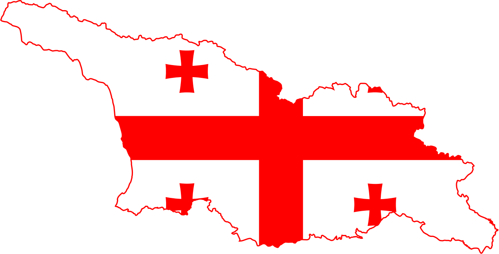
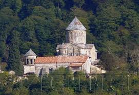
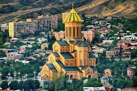
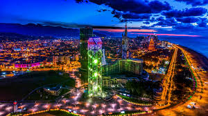
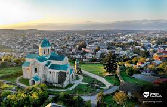
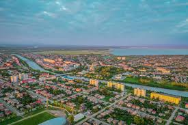

საქართველოსახელმწიფო ევრაზიაში, კავკასიაში, შავი ზღვის აღმოსავლეთ სანაპიროზე. ესაზღვრება ჩრდილოეთიდან რუსეთი, სამხრეთიდან თურქეთი და სომხეთი, და სამხრეთ-აღმოსავლეთიდან აზერბაიჯანი. ტრანსკონტინენტური ქვეყანა სამხრეთ-აღმოსავლეთ ევროპისა და დასავლეთ აზიის გასაყარზე მდებარეობს, თუმცა სოციოპოლიტიკურად და კულტურულად ევროპის ნაწილია
XVII საუკუნეში ქართლში ოთხი ქალაქი ითვლებოდა ტფილისი, გორი, სურამი და ალი. დასავლეთ საქართველოში საქალაქო ცხოვრება მეტად ჩამორჩენილი იყო. სამეგრელოს სამთავროში სრულებით არ იყო ქალაქები. იმერეთის სამეფოს სატახტო ქალაქი ქუთაისი იმდენად პატარა იყო, რომ მხოლოდ 200 კომლი ცხოვრობდა. XVIII საუკუნეში საქართველოში ქალაქთა რიცხვი არ გამრავლებულა. ქართლ-კახეთის სამეფოში 8 ქალაქი იყო აღრიცხული: ტფილისი, გორი, სურამი, ახალგორი, წილკანი, ანანური, თელავი და სიღნაღი. უდიდესი ქალაქი იყო ტფილისი 4000 კომლით, შემდეგ მოდიოდა თელავი 740 კომლით. ერეკლე II ცდილობდა ხელი შეეშალა ქალაქების დაცლისთვის. ქალაქის უზენაეს გამგედ ითვლებოდა მოურავი. XVIII საუკუნის მეორე ნახევარში საქართველოს მოსახლეობის მხოლოდ 5 % ცხოვრობდა ქალაქებში. 1800-1832 წლებში ეს მაჩვენებელი კვლავ 5 %-ის ფარგლებში რჩებოდა. 1865 წელს ურბანული მოსახლეობის წილმა 9,2 %-ს მიაღწია. 1913 წელს ქალაქებში მოსახლეობის 25,6 % ცხოვრობდა, 1939 წელს — 30,1 %. 1989 წელს ურბანული მოსახლეობის წილი საქართველოს სსრ-ში იყო 56%, რაც 10%-ით ნაკლები იყო სსრკ-ის საშუალო მაჩვენებელზე. [1] ამჟამად მოსახლეობის 57,4 % ქალაქებში ცხოვრობს.
თბილისი (1936 წლის 17 აგვისტომდე ტფილისი[2][3]) — დედაქალაქი და მუნიციპალიტეტი[4] საქართველოში; 1922–1936 წლებში ერთდროულად იყო ამიერკავკასიის სფსრ დედაქალაქი; მდებარეობს აღმოსავლეთ საქართველოში, თბილისის ქვაბულში, მდინარე მტკვრის ორივე სანაპიროზე, ზღვის დონიდან 380–600 მ სიმაღლეზე, ჩრდილოეთით ესაზღვრება საგურამოს ქედის სამხრეთი მთისწინეთი, აღმოსავლეთით — ივრის ზეგნის ჩრდილო-დასავლეთი მონაკვეთი, დასავლეთით და სამხრეთით კი — თრიალეთის ქედის განშტოებები. ქალაქს 502 კმ² ფართობი უჭირავს[5] და 1,152 მილიონზე მეტი მცხოვრები ჰყავს. თბილისი კავკასიის რეგიონის მნიშვნელოვანი ინდუსტრიული, სოციალური და კულტურული ცენტრია და ბოლო დროს ერთ-ერთი უმნიშვნელოვანესი სატრანსპორტო კვანძი ხდება გლობალური ენერგომატარებლებისა და სავაჭრო პროექტებისთვის (იხ. ბაქო-თბილისი-ჯეიჰანის ნავთობსადენი და ბაქო-თბილისი-ერზერუმის გაზსადენი). ქალაქი ისტორიული აბრეშუმის დიდი გზის ერთ-ერთ მარშრუტზე მდებარეობს და მნიშვნელოვანი სავაჭრო/სატრანზიტო ცენტრის პოზიცია უჭირავს რუსეთის ჩრდილო კავკასიას, თურქეთსა და ტრანსკავკასიის სომხეთისა და აზერბაიჯანის რესპუბლიკების გადაკვეთაზე სტრატეგიული მდებარეობით. არც თუ ისე დიდი ხნის წინ თბილისი იყო გახმაურებული ვარდების რევოლუციის ეპიცენტრი, რომელიც ქალაქის თავისუფლების მოედანსა და მის შემოგარენში მოხდა 2003 წლის საპარლამენტო არჩევნების შედეგების გაყალბების გამო და რომელსაც შედეგად იმდროინდელი საქართველოს პრეზიდენტის ედუარდ შევარდნაძის გადადგომა მოჰყვა. სახელწოდება თბილისის ძველი სახელწოდება იყო ტფილისი. ადრინდელ ქართულ წერილობით ძეგლებში სწორედ ასეთი ფორმითაა ის დამოწმებული. მაგ. ევსტათი მცხეთელის აბო ტფილელის წამებასასა და „მოქცევაჲ ქართლისაჲს“ ტექსტებში. საქართველოს დედაქალაქის ძველი ფორმიდან, ტფილისიდან წარმოსდგება მისი სახელი მეზობელთა ენებზე. მეზობელ ქვეყნებში ძველად ტფილისი სხვადასხვაგვარად გამოითქმოდა. თავდაპირველად სომხურად ტფილისი „ტფღის“-ად (სომხ. Տփղիս) ჟღერდა, ბერძნულად (ბიზანტიური ხანიდან) გვხვდება „ტიფლის/ტიფლიზა“ (ბერძ. Τιφλίδα), ხოლო ლათინურად როგორც „ტიფლისი“, „ტიფლიტანა“ ასევე „ტრიფელისი“ (ლათ. Tiphlis/Tephlis/Tiphilis; Tiphlitana; Triphelis).[6][7] ასევე ჟღერს თბილისის სახელი არამეულ (არამ. ܛܦܠܝܣ; תיפליס), სპარსულ (სპარს. تفلیس) და თურქულ ენებზე (თურქ. Tiflis). რუსული „Тифлис“ არამეულ-სპარსულ-თურქულ ფორმას იმეორებს, მასვე მოსდევს ევროპის ენებში დამკვიდრებული „Tiflis“. საგულისხმოა ასევე თბილისი კავკასიურ ენებზე. ის ასე გამოითქმის: მეგრულად — „ქართი“, აფხაზურად — „Қарҭ“ [ქართ]. რუსული ფორმა „Тифлис“ დამკვიდრებული იყო 1936 წლის 17 აგვისტომდე, როდესაც სსრ კავშირის ცენტრალურმა აღმასრულებელმა კომიტეტმა დაადგინა, რომ თანახმად სსრ კავშირის შინაგან საქმეთა სახალხო კომისარიატის სახელმწიფო აგეგმვის და კარტოგრაფიის მთავარი სამმართველოს ბიუროს წარდეგნისა დამტკიცებულ იქნა ქალაქის სახელის ახალი ფორმა.[8] რუსული ფორმა „Тбилиси“, რომელიც წარმოადგენს ქართული ახალი სახელწოდების სახელობით ფორმას, თანდათან დამკვიდრდა და განმტკიცდა რუსულ ლიტერატურაში. რაც შეეხება ქართული სახელწოდების ძველ ფორმას მას რამდენიმე ხანი კვლავაც იყენებდნენ. 1937 წლიდან საბოლოოდ დამკვიდრდა ქალაქის დღევანდელი სახელწოდება — თბილისი.
ბათუმი — ქალაქი და მუნიციპალიტეტი[5] საქართველოში, არის აჭარის ავტონომიური რესპუბლიკის ადმინი ტრაციული ცენტრი. ბათუმი არის მოსახლეობის რაოდენობით მეორე ქალაქი საქართველოში, მსხვილი საერთაშორისო ნავსადგური შავი ზღვის სამხრეთ-აღმოსავლეთ სანაპიროზე, მნიშვნელოვანი სამრეწველო, კულტურული და ტურისტული ცენტრი საქართველოში. ბათუმი გაშენებულია ღრმა, კარგად დაცული ბუნებრივი ნავსაყუდელის ბათუმის ყურის ნაპირას, ზღვის დონიდან 3 მეტრზე, თბილისიდან 350 კმ-ში (რკინიგზით). 2014 წლის აღწერის მონაცემებით, ქალაქში ცხოვრობს 152 839 ადამიანი[2].
ქუთაისი — ქალაქი და მუნიციპალიტეტი საქართველოში, იმერეთის მხარის ადმინისტრაციული ცენტრი, სიდიდით მეოთხე ქალაქი საქართველოში, საქართველოს სამეფოს ისტორიული დედაქალაქი, ქუთაისის საეპისკოპოსოს ისტორიული ცენტრი. მდებარეობს მდინარე რიონზე. მოსახლეობა 130 400 ადამიანი (2023). ქუთაისის დოკუმენტური ისტორია იწყება ძვ. წ. III საუკუნიდან, თუმცა ანტიკური ავტორები მას თვლიან ძველი კოლხეთის სამეფოს (ძვ. წ. VIII ს.) დედაქალაქად. ქუთაისის ძველი სახელებია: აია, ქუთაია, ქუთათისიუმი. ქუთაისი საუკუნეების განმავლობაში, VIII-დან XIX საუკუნემდე, დასავლეთქართული სახელმწიფოს (მოგვიანებით იმერეთის სამეფოს) ცენტრი იყო. ბიზანტიელი ისტორიკოსი პროკოპი კესარიელის (VI ს.) ცნობით.მდებარეობს დასავლეთ საქართველოს ცენტრალურ ნაწილში, მდინარე რიონის ორივე ნაპირზე, იმ ადგილას, სადაც მდინარე მთებიდან კოლხეთის დაბლობზე გამოდის. ქუთაისი მდებარეობს ზღვის დონიდან 125-300 მეტრზე, თბილისიდან 220 კმ (რკინიგზით). ქუთაისის ჩრდილო-აღმოსავლეთით ესაზღვრება დაბალმთიანი ოკრიბა, ჩრდილოეთით — სამგურალის ქედი, სამხრეთით და დასავლეთით კი კოლხეთის დაბლობი. დასახლების უმეტესი ნაწილი ვაკეზეა. ქალაქის ჩრდილოეთი უბნები მდინარე რიონის ორივე მხარეს გორაკ-ბორცვებზეა შეფენილი, უკიდურესი აღმოსავლეთი ნაწილი კი საფიჩხიის სერზე, რომელიც მდინარე რიონის ერთ-ერთ ტერასას წარმოადგენს. ჰავა ზომიერად ნოტიო სუბტროპიკულია, იცის ზომიერად თბილის ზამთარი და შედარებით მშრალი და ცხელი ზაფხული. ხშირია აღმოსავლეთის ფიონური ქარი. საშუალო წლიური ტემპერატურაა 14,5 °C, იანვრისა 5,2 °C, ივლისისა 23,2 °C. ნალექები 1730 მმ წელიწადში. მდინარე რიონი ქალაქს კვეთს ჩრდილოეთიდან სამხრეთისკენ. ქალაქის ფარგლებში მასზე აშენებულია რიონჰესი და გუმათჰესი. ქალაქის აღმოსავლეთ ნაწილში მიედინება მდინარე წყალწითელა, ხოლო ჩრდილო-დასავლეთში მდინარე ოღასკურა. ქალაქის ჩრდილოეთ ნაწილში რიონს ერთვის მცირე მდინარე რუა. ქალაქის ჩრდილოეთ ნაწილში შემორჩენილია ძელქვის კორომი. ქალაქის ფარგლებში და მის შემოგარენში მოიპოვება საშენი მასალა, მათ შორის გოჭოურის სააგურე თიხა, ეკლარის მოსაპირკეთებელი და საკედლე ქვა, ბანოჯის მარმარილო, მოწამეთას კირქვები და სხვა.
ფოთი — ქალაქი და მუნიციპალიტეტი[3], საქართველოში, სამეგრელო-ზემო სვანეთის მხარეში. მდებარეობს შავ ზღვის ნაპირზე, მდინარე რიონის შესართავთან. არის საპორტო ქალაქი, ფოთისა და ხობის ეპარქიის ცენტრი. გეოგრაფია რელიეფი მდებარეობს კოლხეთის დაბლობზე, ზღვის დონიდან 1-3 მეტრზე, თბილისიდან დაშორებულია 312 კმ-ით (რკინიგზით). ქალაქის ტერიტორია შეადგენს 69 კვ. კმ-ს. ქალაქს უჭირავს ზღვისპირა ვაკე-დაბლობი, რომელსაც მდინარე რიონის ერთ-ერთი ტოტი არათანაბარ ნაწილებად ყოფს. ქალაქის მოსაზღვრე მიწები მეტწილად დაჭაობებულია, განსაკუთრებით იქ, სადაც ნიადაგის ზედაპირის დონე ზღვის დონეზე დაბალია. ქალაქს სამხრეთ-აღმოსავლეთით ჩამოუდის მდინარე კაპარჭინა, აქვე მდებარეობს პალიასტომის ტბა. ჰავა ფოთში ზღვის ნოტიო სუბტროპიკული ჰავაა. იცის თბილი ზამთარი და ცხელი ზაფხული. ჰაერის საშუალო წლიური ტემპერატურაა 14,1 °C, იანვრისა 5,2 °C, ივლისის — 22,9 °C. აბსოლუტური მინიმუმი -13 °C; აბსოლუტური მაქსიმუმი 41 °C. ნალექების წლიური რაოდენობა 1960 მმ"
     